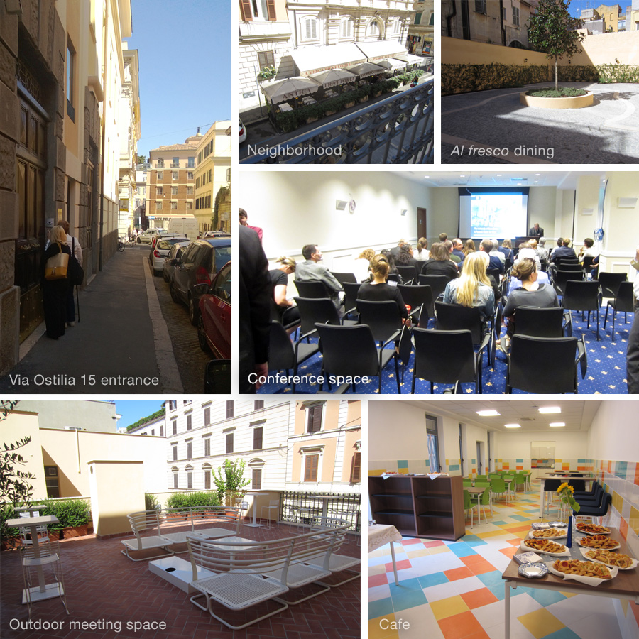

Location
The Digital Future of World Heritage Symposium took place at the University of Notre Dame Rome Centre, Via Ostilia 15, Rome, Italy.
The Centre is in close proximity to numerous large research universities and can be easily accessed by air, rail, bus and car. The weather in April is very pleasant and the close proximity to the center of the Eternal City of Rome provides unique architectural and structural attractions, including well-known World Heritage Sites, such as the Colosseum and the Roman Forum.

Lodging
Rooms were held at the Hotel Capo d'Africa for the nights of April 2,3, and 4. Attendees were asked to identify themselves as attending the Digital Future of World Heritage Conference to receive a discounted price.
Near the Notre Dame Rome Centre on Via Ostilia
Hotel Capo d’Africa (Distance: 230 m / 0.14 miles)
Via Capo d’Africa 54, 00184 Rome, Italy
Tel +39 06 772 801
Albergo Santa Chiara Rome (Distance: 2.3 km /1.4 miles)
Via Santa Chiara, 21, 00186 Rome, Italy
Tel +39 06 6872979
Grand Hotel de la Minerve Roma (Distance: 2.0 km / 1.24 miles)
Piazza della Minerva, 69, 00186 Rome, Italy
Tel +39 06 695201
Hotel Forum (Distance: 1.0 km / 0.68 miles)
Via Tor de Conti 25-30, 00184 Rome, Italy
Tel +39 06 6792446
Walking Tour
A walking tour was offered to Symposium attendees. Separate registration was required and space was limited.
Layers of Rome from antiquity to the Renaissance
Wednesday, 2 April 2014
9:00 pm – 10:30 pm
This evening walking tour of Rome included visits to Santa Maria Sopra Minerva in Piazza Minerva, Pantheon in Piazza della Rotonda, Piazza Navona, Santa Maria della Pace, Ponte Sant’Angelo, and Castel Sant’ Angelo. More details (pdf)